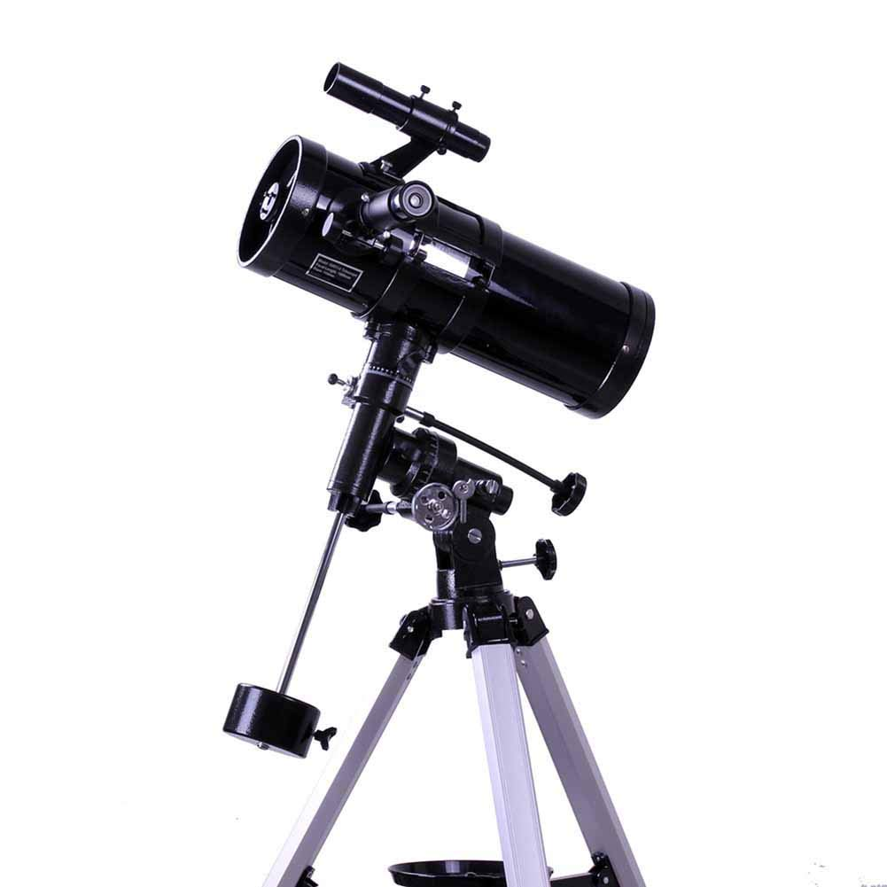

Celestron AstroMaster 130EQ-MD - Telescopio con motor para seguimiento automático, azul
Telescopio Astronómico Zoom HD al Aire Libre Monocular Espacio Telescopio con Trípode Telescopio terrestre para Niños, Principiantes - Uverbon
Svbony SV25 Telescopio Astronómico Zoom 420/60mm Terrestre con Trípode para Astrónomos y Niños Ideal para los Principantes (Blanco)
Geertop Telescopio refractor astronómico de alta calidad ultra claro con trípode de mesa y buscador, 400x70mm, para astrónomos principiantes y adolescentes
Celestron Travel Scope 50 - Telescopio portable con ampliación de 18x, longitud focal 36 cm, color negro, abertura de 50 mm

IGPG Reflejando el telescopio Fz77-92 de Newton, Estrellas observables, Luna, Saturno, Júpiter, Nebulosa